| 日付 | 2011年10月8日（土） - 2011年10月10日（月） | ||||||
|---|---|---|---|---|---|---|---|
| 山域 | 西上州、浅間周辺 | ||||||
| メンバー | 家族（妻、長女・0歳） | ||||||
| 山行形態 | 子連れ2泊3日ホテル泊 | ||||||
| アクセス | 車 | ||||||
| ルート (Map3) |
|
3日目
ホテルの朝食は7:30からとなかなか遅い。朝食を済ませてホテルを出発する。
湯ノ丸高峰林道からは湯ノ丸山がよく見える。
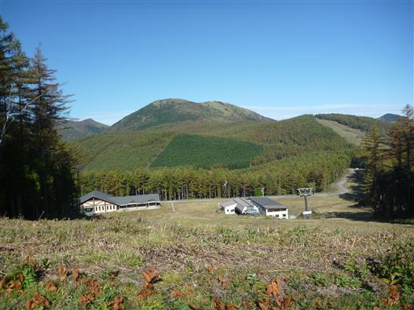
8:42 兎平駐車場に到着。標高2060m。
この側には池ノ平湿原があるため、駐車場は非常に大きい。
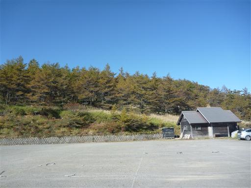
準備を整えて出発する。この辺りは天然のカラマツ林が広がっている。
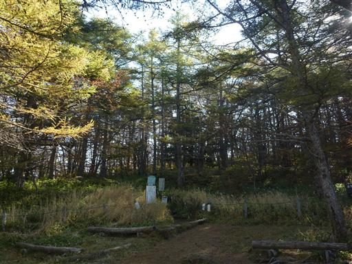
歩き始めると目指す篭ノ登山が見えてくる。今日の天気は最高だ。
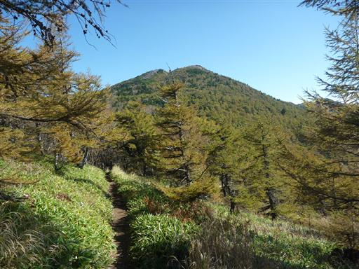
歩きやすい登山道を登っていく。周りの植物の種類は豊富で、木も林床も美しい。
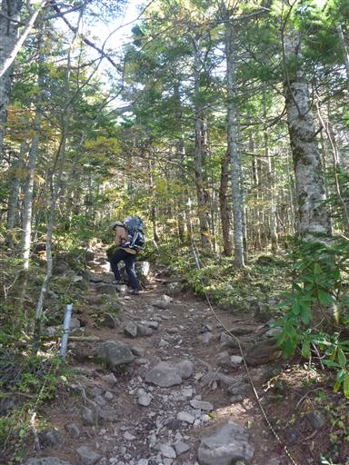
しばらく登ると、展望が大きく広がる。
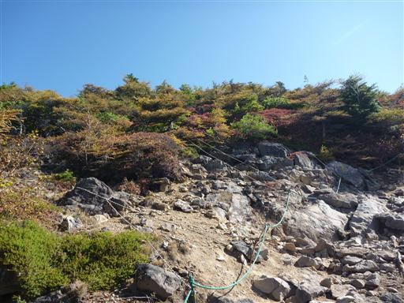
まず目に入るのが八ヶ岳。八ヶ岳の奥に北岳が頭を出している。

何と遠くの富士山まで見えている。山頂からの展望が楽しみだ。
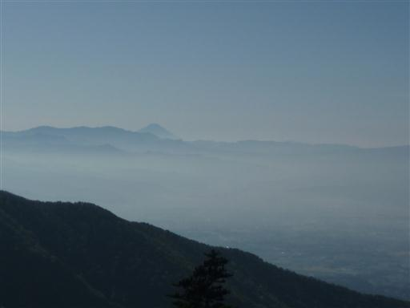
展望の良い道をさらに登っていく。
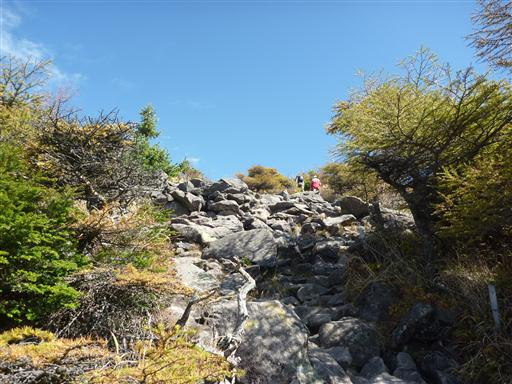
9:16 東篭ノ登山山頂到着。標高2227m。
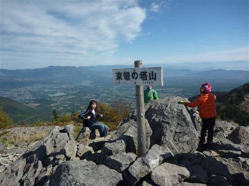
まず目に飛び込んでくるのが、昨年登った四阿山。
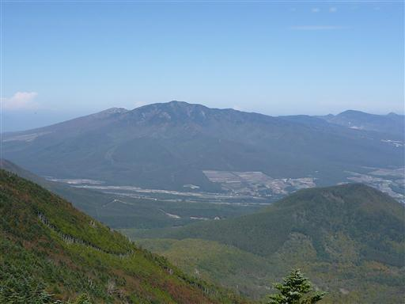
手前に見えるのは水ノ登山。こちらからの登山道も面白そうだ。
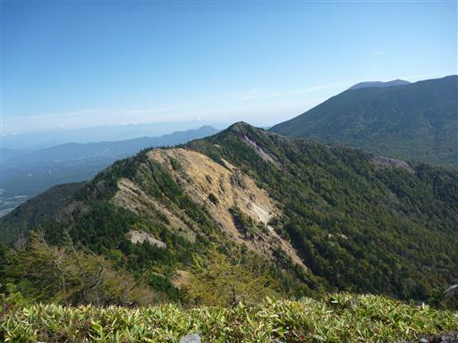
まだ時間に余裕があるので西篭ノ登山を往復することにする。西の方が少し標高が低い。
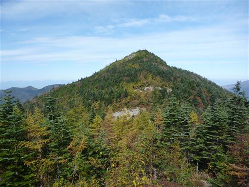
東篭ノ登山との鞍部に到着。草紅葉が美しい。
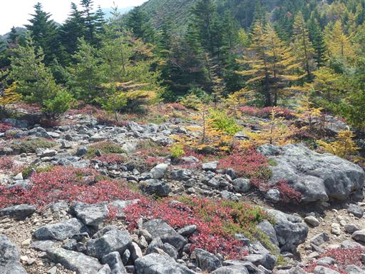
妙義山や荒船山はまだ紅葉が進んでいなかったが、こちらはもう完全に秋の装いだ。
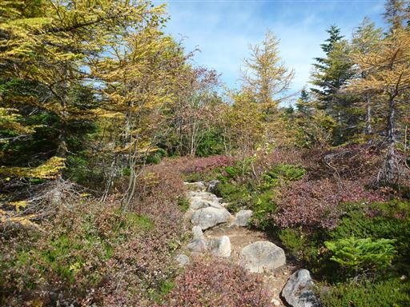
9:41 西篭ノ登山山頂到着。標高2212m。
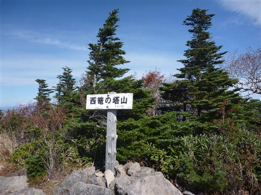
こちらの山頂も東篭ノ登山同様、展望が非常に良い。
目の前に湯ノ丸山。その奥の山脈は北アルプス。穂高岳から白馬岳まではっきり見えている。
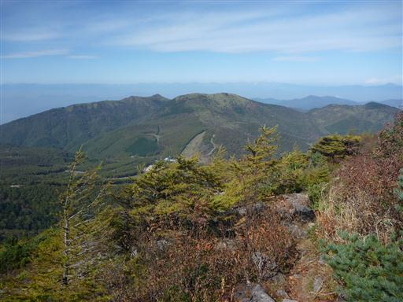
反対方向には奥の方に浅間山が頭だけ見えている。
浅間山を隠しているのは以前登った黒斑山だ。
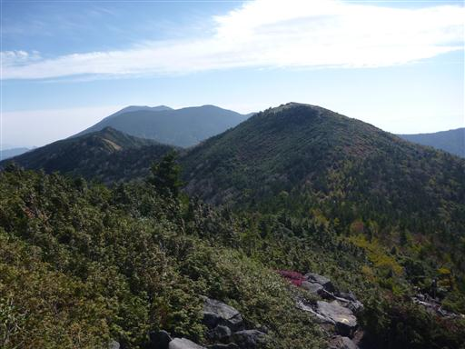
東篭ノ登山経由で下山する。
11:14 兎平駐車場到着。
駐車場の前のベンチで昼食をとる。
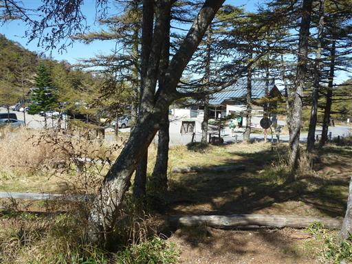
この時間になると駐車場はだいぶ埋まっていた。
遅くなると混むので早いうちに帰宅することにする。
天気と展望に恵まれた3連休だった。
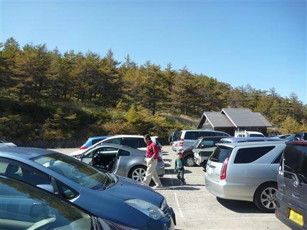